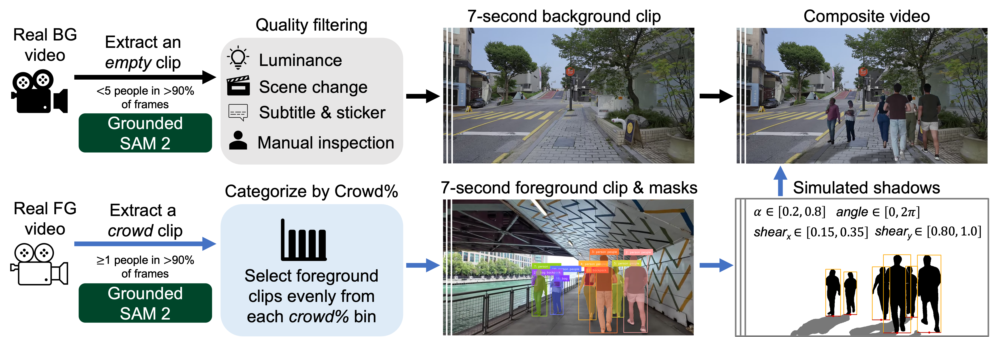

Egocentric walking tour videos are a rich source of visual data for modeling real-world environments, but their usefulness is limited by frequent human occlusions from crowds and eye-level viewpoints. We address this by developing a generative method to realistically remove humans and their shadows from such videos.
We focus on addressing this challenge by developing a generative algorithm that can realistically remove (i.e., inpaint) humans and their associated shadow effects from walking tour videos. Key to our approach is the construction of a rich semi-synthetic dataset of video clip pairs to train this generative model. We then used this dataset to fine-tune the state-of-the-art Casper video diffusion model for object and effects inpainting, and demonstrate that the resulting model performs far better than Casper both qualitatively and quantitatively at removing humans from walking tour clips with significant human presence and complex backgrounds.

@article{TBU,
author = {TBU},
title = {Generating Humanless Environment Walkthroughs from Egocentric Walking Tour Videos},
journal = {CVPR},
year = {2026},
}